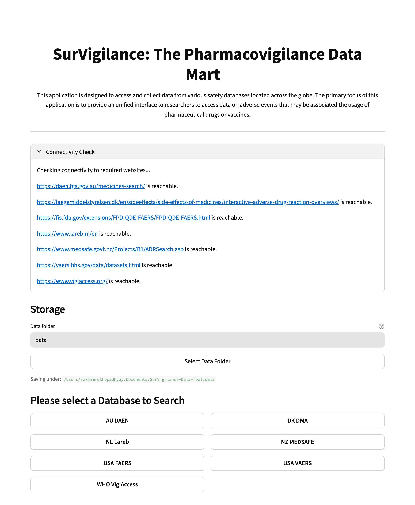
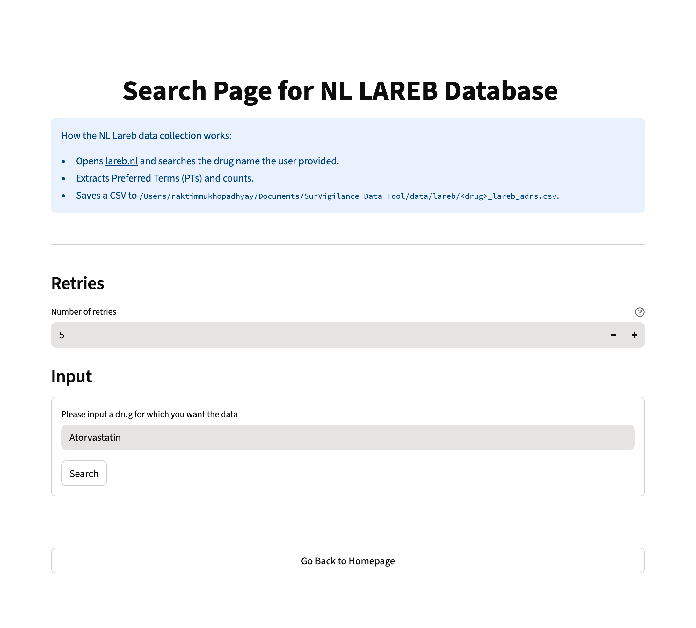
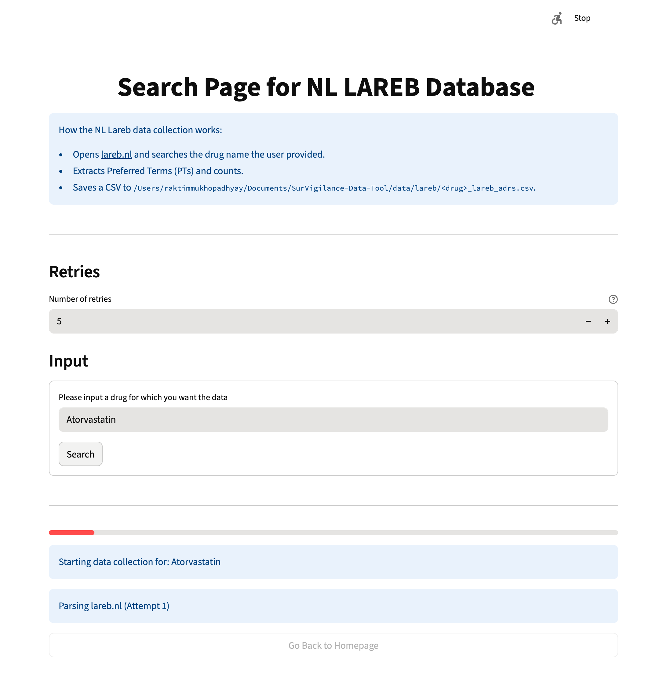
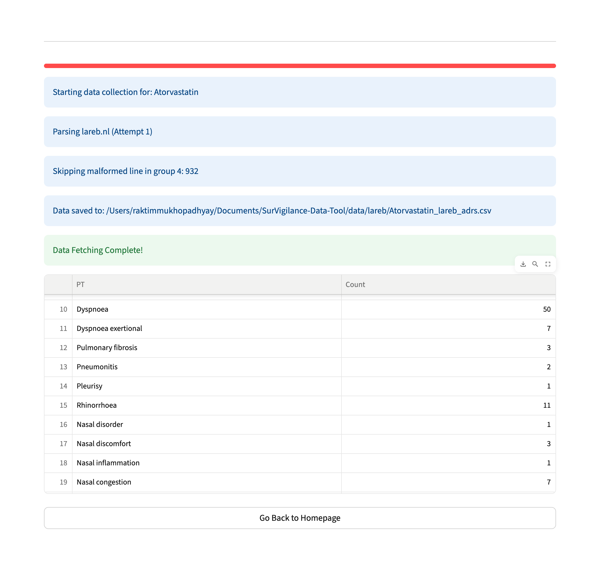

Usage Instructions for Downloading Data from Lareb database using SurVigilance#
[1]:
## Instantiating the Application
# uncomment the below code to instantiate the application on a local machine
"""
from SurVigilance.ui import UI
UI().run()
""";
The above code will display the landing page of the dashboard application as shown below.

On the landing page, we show a widget that checks the connectivity to each webpage associated with the databases. Once the user clicks on the “Lareb” page, the page shown below opens. On this page, the user can input the drug of interest and also the number of attempts (default is 5) for retrieving data before error is shown. Here we download data for the drug “Atorvastatin”.

Once the user clicks on the “search” button, the code in the backend starts to parse and collect data on “Atorvastatin” from the Lareb database as shown below.

Once the data collection is completed, the data is displayed and a CSV file can also be found at the location where the downloaded data is stored.
